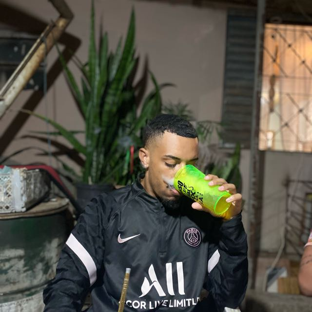

Gabriel De Souza Santana

Dados Pessoais
Brasileiro, Solteiro, 21 anos.
Escolaridade
Colégio Marista Irmão Jaime Biazus , Porto Alegre RS.
• Completo.
Faculdade Uniasselvi – Porto Alegre RS.
• Educação Física (Bacharelado) - Primeiro semestre .
Experiência
• 20/11/2018 – 20/11/2019
Jovem aprendiz
Educação e Assistência -
Pontifícia Universidade Católica do Rio Grande do Sul
PUC / RS.
Montagem e desmontagem de computadores, notebooks e impressoras, instalações, manutenções e configuração de programas como Linux e Windows.
Realizava a configuração para acesso remoto e a operação de redes locais de computadores, através de dispositivos móveis e internet,
tendo o conhecimento básico de todo o sistema operacional de computadores.
• 02/08/2021 – 10/06/2022
Exército Brasileiro - Ano obrigatório Colégio Militar De Porto Alegre.
No aquartelamento trabalhei no setor de manutenção de computadores, instalações e configurações de impressoras e sons .
Supervisionei aulas on-line nas plataformas digitais, manutenção e cabeamento de redes e instalação de projetores.
• 02/08/2022 - 12/2022
Academia Perfect Body - Consutor de Vendas
Atendimento ao cliente durante todo o processo de vendas, via contato telefônico e WhatsApp desde a prospecção até o fechamento do plano.
• 05/2023 à 08/2023
Expert Alpinismo – Autônomo/ ajudante de alpinista.
Auxiliava o profissional alpinista, no transporte de materiais de segurança, como cinto de segurança,
sistema de cordas e demais EPIS ( Equipamento de Proteção Indiviadual). Auxiliava também, nos materiais para a realização de pinturas nas fachadas em prédios comerciais e residênciais.
Cursos Adquiridos
• Operador de computador;
• Programa Jovem Aprendiz;
• Curso Teórico De Cabeamento De Redes (EAD), completo;
• Sala Virtual (EAD),completo;
• Software Livre (EAD),completo;
• Edição de Imagens (EAD)c ompleto;
• Curso NR-35 (RESGATE E TRABALHO EM ALTURA).br